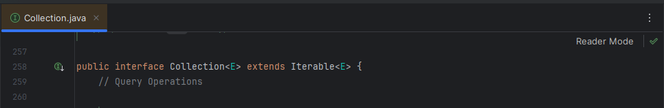
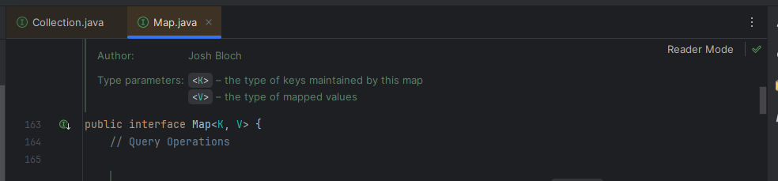
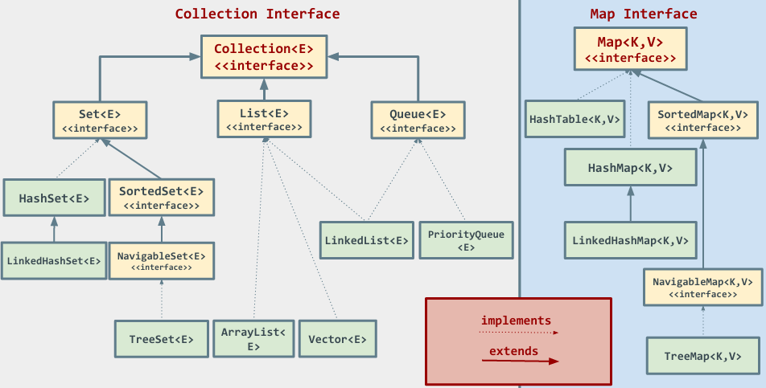

En Java, las colecciones de objetos se agrupan utilizando el Java Collections Framework (JCF), un conjunto de interfaces y clases que facilitan el trabajo. El JCF se organiza en torno a varias interfaces clave:
- Interfaz Collection<E>: es la base de las colecciones en Java. Define un conjunto básico de operaciones que cualquier colección de objetos debe soportar, como añadir, eliminar y verificar la existencia de elementos.

Esta interfaz tiene varias subinterfaces que proporcionan más funcionalidad específica según lo que necesitemos: List, Set y Queue. En los siguientes apartados conoceremos más cada una de estas estructuras, pero como aperitivo, podemos decir que las listas son colecciones de elementos que permiten duplicados (como la clase ArrayList). En cuanto a los Set, estos presentan una colección de elementos únicos, es decir, no permiten duplicados (clases HashSet); y los Queue representan una colección de elementos que se procesan siguiendo el principio FIFO: los elementos se insertan al final de la cola y se eliminan por el inicio.
- Interfaz Map<K, V>: representa una colección de pares clave-valor donde cada clave está asociada a un valor. Las claves son únicas, pero los valores pueden duplicarse.

HashMap, TreeMap y LinkedHashMap son implementaciones comunes de Map. Este tipo de interfaz la veremos en el próximo apartado (7.2.).

Métodos típicos de la interfaz Collection
Como ya conocemos de los ArrayList, las principales funcionalidades que comparten todos los objetos que implementan la interfaz Collection son las siguientes:
- boolean add(Object o): añade un elemento a la colección. Retornará true si la colección cambia como resultado de la llamada (es decir, si el elemento se agrega correctamente) y false en caso contrario (por ejemplo, si el elemento ya está en un conjunto que no permite duplicados como las clases Set).
- boolean remove(Object o): elimina una instancia del objeto especificado de la colección, en caso de que exista. Devuelve true si la colección cambia y false en caso contrario.
- void clear(): elimina todos los elementos de la colección.
- boolean contains(Object o): verifica si la colección contiene una instancia del objeto especificado. Retorna true si el objeto existe y false en caso contrario.
- boolean isEmpty(): retorna true si la colección está vacía y false en caso contrario.
- int size(): devuelve el número de elementos en la colección.